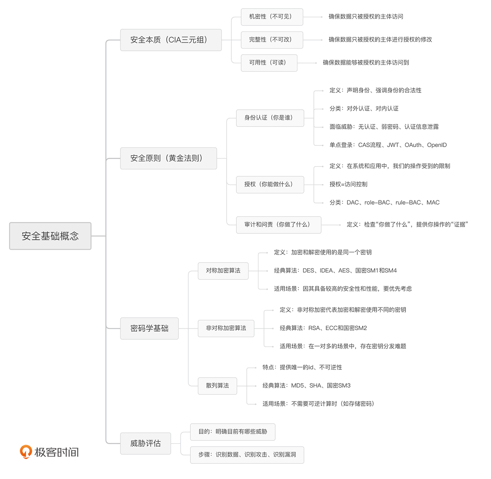

- 00 开篇词 别说你没被安全困扰过.md.html
- 01 安全的本质：数据被窃取后，你能意识到问题来源吗？.md.html
- 02 安全原则：我们应该如何上手解决安全问题？.md.html
- 03 密码学基础：如何让你的密码变得“不可见”？.md.html
- 04 身份认证：除了账号密码，我们还能怎么做身份认证？.md.html
- 05 访问控制：如何选取一个合适的数据保护方案？.md.html
- 06 XSS：当你“被发送”了一条微博时，到底发生了什么？.md.html
- 07 SQL注入：明明设置了强密码，为什么还会被别人登录？.md.html
- 08 CSRF_SSRF：为什么避免了XSS，还是“被发送”了一条微博？.md.html
- 09 反序列化漏洞：使用了编译型语言，为什么还是会被注入？.md.html
- 10 信息泄露：为什么黑客会知道你的代码逻辑？.md.html
- 11 插件漏洞：我的代码看起来很安全，为什么还会出现漏洞？.md.html
- 13 Linux系统安全：多人共用服务器，如何防止别人干“坏事”？.md.html
- 14 网络安全：和别人共用Wi-Fi时，你的信息会被窃取吗？.md.html
- 15 Docker安全：在虚拟的环境中，就不用考虑安全了吗？.md.html
- 16 数据库安全：数据库中的数据是如何被黑客拖取的？.md.html
- 17 分布式安全：上百个分布式节点，不会出现“内奸”吗？.md.html
- 18 安全标准和框架：怎样依“葫芦”画出好“瓢”？.md.html
- 19 防火墙：如何和黑客“划清界限”？.md.html
- 20 WAF：如何为漏洞百出的Web应用保驾护航？.md.html
- 21 IDS：当黑客绕过了防火墙，你该如何发现？.md.html
- 22 RASP：写规则写得烦了？尝试一下更底层的IDS.md.html
- 23 SIEM：一个人管理好几个安全工具，如何高效运营？.md.html
- 24 SDL：怎样才能写出更“安全”的代码？.md.html
- 25 业务安全体系：对比基础安全，业务安全有哪些不同？.md.html
- 26 产品安全方案：如何降低业务对黑灰产的诱惑？.md.html
- 27 风控系统：如何从海量业务数据中，挖掘黑灰产？.md.html
- 28 机器学习：如何教会机器识别黑灰产？.md.html
- 29 设备指纹：面对各种虚拟设备，如何进行对抗？.md.html
- 30 安全运营：“黑灰产”打了又来，如何正确处置？.md.html
- 加餐1 数据安全：如何防止内部员工泄露商业机密？.md.html
- 加餐2 前端安全：如何打造一个可信的前端环境？.md.html
- 加餐3 职业发展：应聘安全工程师，我需要注意什么？.md.html
- 加餐4 个人成长：学习安全，哪些资源我必须要知道？.md.html
- 加餐5 安全新技术：IoT、IPv6、区块链中的安全新问题.md.html
- 模块串讲（一）Web安全：如何评估用户数据和资产数据面临的威胁？.md.html
- 模块串讲（三）安全防御工具：如何选择和规划公司的安全防御体系？.md.html
- 模块串讲（二）Linux系统和应用安全：如何大范围提高平台安全性？.md.html
- 结束语 在与黑客的战役中，我们都是盟友！.md.html
- 捐赠
05 访问控制：如何选取一个合适的数据保护方案？
你好，我是何为舟。
在上一讲中，我们主要从身份认证的场景和威胁上，对身份认证进行了介绍。同时，身份认证的核心问题是身份管理，因此我们可以采用单点登录的形式，来解决复杂的身份管理问题。常用的单点登录方式包括CAS流程、JWT、OAuth和OpenID。
那听了你对身份认证的规划之后，面试官觉得很满意，接着又问道：“既然身份认证都做到这么好了，是不是就不需要所谓的‘黄金法则’了？有了身份认证，还需要授权和审计做什么呢？”
对于这个问题，你肯定要先给出否定的回答，这个很显然。接着，你可以说：“通过身份认证，我们只能够确认用户的身份，而对用户的操作和访问行为的把控，就是授权和审计的任务了。”
接着，面试官又发问了：“我理解身份认证和授权的区别了。目前，我们公司的授权机制比较随意，基本就是有什么需求就做什么。如果是你，你会怎么优化授权机制呢？”
那这一讲中，我们就来介绍几种常见授权机制的概念和原理，以及在实际工作中我们该如何去选取合适的保护机制。这些通用的机制学习起来可能比较抽象，但“磨刀不误砍柴工”，理解了宏观上的知识基础，对我们后续学习各类具体的防御机制会有很大的帮助。
我个人认为，“授权”和“访问控制”其实是同一个概念，都是允许或者禁止某个用户做某件事情。现在行业内普遍用“访问控制”这个术语来讨论相关问题。因此，后续我们都会用“访问控制”来替代“授权”。如果你看到了这两种说法，知道它们是一个意思就可以了。
访问控制模型
首先，在探讨访问控制的机制之前，我们先要来了解一下，访问控制的场景是什么。这也是你去理解访问控制机制的一个基础。我把访问控制模型抽象成了下图的模型，你可以看看。具体来说就是，一个主体请求一个客体，这个请求的授权由访问控制来完成。

如何具体的理解这个模型呢？你可以这样想：在用户去读取文件的过程中，用户是主体，读取这个操作是请求，文件是客体。下面我来详细介绍一下。
- 主体：请求的发起者。主体可以是用户，也可以是进程、应用、设备等任何发起访问请求的来源。
- 客体：请求的接收方，一般是某种资源。比如某个文件、数据库，也可以是进程、设备等接受指令的实体。
- 请求：主体对客体进行的操作。常规的是读、写和执行，也可以进一步细分为删除、追加等粒度更细的操作。
常见的访问控制机制
访问机制是否对请求进行授权，决定着这个操作能否顺利执行下去。所以，对于我们来说，了解访问机制的规则至关重要。常见的访问控制机制有4种：DAC、role-BAC、rule-BAC、MAC。 接下来，我们一一来看。
我们先来第1种，DAC（Discretionary Access Control，自主访问控制）。
DAC就是让客体的所有者来定义访问控制规则。想象一下，你想要从图书馆中拿走一本书。这个时候，管理员说，“你经过这本书的所有人同意了吗？”这个过程就是DAC。
在DAC中，访问控制的规则维护完全下发到了所有者手上，管理员在理论上不需要对访问控制规则进行维护。因此，DAC具备很高的灵活性，维护成本也很低。相对地，尽管DAC降低了管理员的工作难度，但是会增加整体访问控制监管的难度，以至于安全性完全取决于所有者的个人安全意识。
这么说来，DAC的特性其实就是将安全交到了用户手中，因此，DAC适合在面向用户的时候进行使用。当用户需要掌控自己的资源时，我们通常会采取DAC，来完成访问控制。比方说，Linux中采用的就是DAC，用户可以控制自己的文件能够被谁访问。
第2种是role-BAC（role Based Access Control，基于角色的访问控制）。
role-BAC就是将主体划分为不同的角色，然后对每个角色的权限进行定义。我们还是以图书馆为例。当你想借书的时候，管理员说，“你是学生吗？”这个过程就是role-BAC。管理员只需要定义好每一个角色所具备的功能权限，然后将用户划分到不同的角色中去，就完成了访问控制配置的过程。
role-BAC是防止权限泛滥，实现最小特权原则的经典解决方案。试想一下，假如没有角色的概念，那么管理员需要给每一个用户都制定不同的权限方案。当用户的岗位或职责发生变更时，理论上管理员需要对这个用户的权限进行重新分配。但是，准确识别每一个用户需要哪些权限、不需要哪些权限，是一个很有挑战的工作。如果采用了role-BAC，那么管理员只需要简单地将用户从一个角色转移到另一个角色，就可以完成权限的变更。
因此，role-BAC更适合在管理员集中管理的时候进行使用。在这种情况下，所有的权限都由管理员进行分配和变更，所以，使用role-BAC可以大大降低管理员的工作难度，提高他们的工作效率。同样的原理也适用于应用，应用可以对不同的角色限定不同的操作权限，比如：运维人员给开发、产品、运维划分不同的机器操作权限。
第3种是rule-BAC（rule Based Access Control，基于规则的访问控制）。
rule-BAC就是制定某种规则，将主体、请求和客体的信息结合起来进行判定。在rule-BAC的控制机制中，如果你想要在图书馆借书，管理员会说，“根据规定，持有阅览证就可以借书。”
相比较来说，DAC是所有者对客体制定的访问控制策略，role-BAC是管理员对主体制定的访问控制策略，而rule-BAC可以说是针对请求本身制定的访问控制策略。
在rule-BAC中，有一点需要我们注意。那就是，我们需要定义是“默认通过”还是“默认拒绝”，即当某次请求没有命中任何一条规则时，我们是应该让它“通过”还是“拒绝”呢？这需要根据安全的需求来进行综合考量。
比如，某个服务只提供了80和443端口的Web服务，那么防火墙配置的规则是允许这两个端口的请求通过。对于其他任何请求，因为没有命中规则，所以全部拒绝。这就是“默认拒绝”的策略。很多时候，为了保障更高的可用性，应用会采取“默认通过”的策略。
rule-BAC适合在复杂场景下提供访问控制保护，因此，rule-BAC相关的设备和技术在安全中最为常见。一个典型的例子就是防火墙。防火墙通过将请求的源IP和端口、目标IP和端口、协议等特征获取到后，根据定义好的规则，来判定是否允许主体访问。比如，限制22端口，以拒绝SSH的访问。同样地，应用也往往会采取风控系统，对用户异常行为进行判定。
最后一种是MAC（Mandatory Access Control，强制访问控制）。
MAC是一种基于安全级别标签的访问控制策略。只看这个定义你可能不太理解，我们还是用图书馆的例子来解释一下，当你在图书馆排队借书的时候，听到管理员说：“初中生不能借阅高中生的书籍。”这就是一种强制访问控制。在互联网中，主体和客体被划分为“秘密、私人、敏感、公开”这四个级别。MAC要求对所有的主体和客体都打上对应的标签，然后根据标签来制定访问控制规则。
比如：为了保证机密性，MAC不允许低级别的主体读取高级别的客体、不允许高级别的主体写入低级别的客体；为了保证完整性，MAC不允许高级别的主体读取低级别的客体，不允许低级别的主体写入高级别的客体。这么说有些难以理解，我们可以这样来记：机密性不能低读、高写；完整性不能高读、低写。
MAC是安全性最高的访问控制策略。但它对实施的要求也很高，需要对系统中的所有数据都进行标记。在实际工作中，想要做到这一点并不容易。每一个应用和系统，每时每刻都在不停地生产新的数据，数据也不停地在各个系统之间流转。你需要对这些行为进行全面的把控，才能将标签落地。因此，MAC仅仅会出现在政府系统中，普通公司在没有过多的合规需求下，不会采取MAC。

好了，相信你现在已经对4种访问控制机制的特点，有了更深刻的理解了。那你可能要问了，在实际工作中，它们是如何应用的呢？在实际的工作中，我们常常需要将它们进行组合使用。比如，在Linux中，我们除了对文件进行DAC访问控制，也利用了role-BAC定义了用户组（group）的概念。这样，管理员就可以将用户分配到不同的组中，DAC也会按照分组去定义相应的权限了。所以，使用访问控制机制的时候，我们要学会灵活应用。
威胁评估的步骤
最后，我想跟你聊一下威胁评估。在前面的课程中，我们描述了如何去衡量安全以及如何去做安全。但是，在安全方案实际落地的过程中，我们首先要考虑的是：目前存在哪些安全威胁。只有明确了这些安全威胁，你才能够成功说服老板和业务人员，去配合你推动安全方案的落地。既然如此，我们首先要做的就是威胁评估，看看哪里有安全威胁。
威胁评估主要有三个步骤：识别数据、识别攻击、识别漏洞。
我们先来看一下识别数据。我们知道，安全保护的核心资产就是数据。因此，威胁评估的第一步就是去识别数据。识别数据的最终目的是，当发生攻击，某一份数据的CIA受到影响时，会对公司造成多大的损失。这也是我们衡量安全投入高低的一个主要指标。
一般情况下，在识别完数据之后，我们就能推测出黑客会采取哪些方式进行攻击，这也就到了第二个步骤：识别攻击。识别攻击的核心就是，明确什么样的数据有价值被攻击。比如，对于公开的数据，没有被窃取的意义，所以黑客只会通过爬虫来抓站，而不会花费更大的成本去盗号。
在识别了数据和攻击之后，我们就需要根据应用去识别可能的漏洞了。这也就是第三个步骤：识别漏洞。比如，对于Web应用，它可能出现诸如XSS、SQL注入等Web漏洞。关于这一点，业内将常见的攻击和漏洞进行了总结。比如，近两年来由MITRE提出的ATTACK框架比较知名。在识别漏洞的时候，我们可以基于这些总结性框架去进行罗列。
通过对数据、攻击、漏洞的识别，你就能够知道，公司当前面临了哪些潜在的威胁，从而可以去思考解决方案，并推动它的落地。通常来说，我们需要定期（比如每年）对公司进行一次全面的威胁评估工作，并且随着公司的发展，不断调整安全方案。
总结
好了，这一节的内容差不多了，我们来总结一下，你需要掌握的重点内容。
在这一节中，我们主要介绍了4种常见的访问控制机制：DAC、role-BAC、rule-BAC和MAC。它们的特点分别是：自主访问控制、基于角色的访问控制、基于规则的访问控制和基于标签的访问控制。
通过学习它们的特点，我们就能知道它们的使用场景：DAC适合面向用户；role-BAC适合集中管理使用；rule-BAC适合复杂场景；MAC安全性最高，一般只出现在政府系统中。在实际的工作中，我们往往需要把它们进行组合使用。
在任何的应用中，权限都必然会存在。通过对访问机制的理解学习，会引导你去思考在设计应用的过程中，有哪些点被忽视了。这样在实际的开发工作中，我们就能通过合理的设计，选取合适的访问控制机制，来避免安全问题的产生。
除此之外，我们又介绍了威胁评估。威胁评估的主要思路是，通过识别数据、识别攻击、识别漏洞这三个步骤，来评估公司当前所面临的潜在威胁。只有明确了公司目前存在的安全威胁，你的安全方案才能顺利推进和落地实施。
最后补充一点，黄金法则我们已经讲过认证和授权这两个部分了，审计部分因为没有具体的方法论，主要就是日志记录和分析，我们就不再单独介绍了。这块内容不难，如果感兴趣，你可以自己找一些资料来学习。
讲到这里，关于安全基础的理论知识部分我们就全部讲完了。我把这一模块的重点内容梳理了一个脑图。你可以用它来查漏补缺，也可以自己来梳理看看，加深印象。

思考题
好了，今天的内容差不多了，我们来看一道思考题。
首先，是面试官的问题，“你会怎么设计授权机制呢？”除了从访问控制的机制上入手，你其实还可以通过对公司进行威胁评估，来说服面试官你的方案是正确的。经过这一轮沟通，相信你能够给面试官，留下一个很专业的印象了。
欢迎在留言区写一写你准备怎么回答面试官。如果有收获，也欢迎你把文章分享给你的朋友。我们下一讲再见！
© 2019 - 2023 Liangliang Lee. Powered by gin and hexo-theme-book.